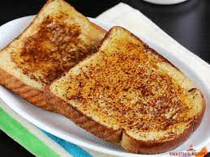

French Toast

Ingredients
- 3 eggs, beaten
- 2 teaspoons white sugar
- 1 teaspoon milk
- 1 teaspoon ground cinnamon
- 1/4 teaspoon
- 6 slices bread
Steps
- Mix beaten eggs, sugar, milk, cinnamon, and salt in a large, shallow bowl. Dip bread slices into egg mixture to coat.
- Heat a skillet over medium heat. Cook bread in hot skillet until browned completely, 2 to 3 minutes per side.
Return to main page